Hodge Podge of ML
Tensor 张量
动机: 很多地位都相同的数据可以用一维数组存储. 如果有很多不同「地位」的数据, 我们给没种地位分配一个维度来存储, 这就是张量.
名字来源: 由于数学里 \((0,k)\)-tensor \(T: V^k \to \mathbb{F}\) 在选取一组 basis \(\{\mathbf{e}_i\}_{i=1}^k\) 后的 representation 刚好是一个 \(k\) 维数组 \(T_{i_1i_2 \cdots i_k}\) (正如 linear functional 可以被一个 covector 描述, bilinear functional 可以被一个 matrix 描述).
机器学习里 training data, kernel, feature map 等都用 tensor 来描述, Python 自带的
list和np.array(), 统统都要转化为torch.tensor来进行计算 (因为Tensor类提供了很多现成的方法可以调用).import torch import numpy as np # python list to tensor data_list = [[1, 2, 3], [4, 5, 6]] list2tensor = torch.tensor(data_list) # numpy array to tensor data_array = np.array([[1, 2, 3], [4, 5, 6]]) array2tensor = torch.from_numpy(data_array)
Tensor Format
- 2D tensor: (就是矩阵)
- Row, Col (R, C): 两个维度.
- Memory Layout: 见 Figure fig-tensor2d-layout.
- Row-major (RC): 先沿着行方向将数据拉直,
numpy采用. - Column-major (CR): 先沿着列方向将数据拉直,
Eigen采用.
- Row-major (RC): 先沿着行方向将数据拉直,
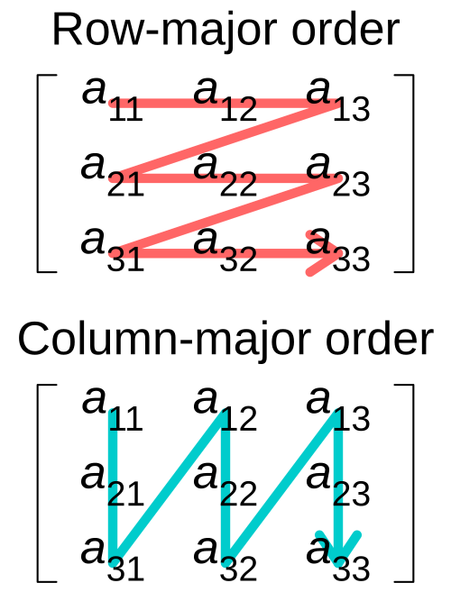
4D tensor: 特别是在图像处理中, 4D 张量非常常见, 现在单独详细研究一下它:
H, W, C(D), N(B) 维度语义: Height, Width, Channel(Depth), Batch size (见 Figure fig-tensor-layout 左图).
Memory Layout1: (注意无论多少维度的张量, 在内存中显然都是以 (也只能以) 一维数组的形式连续存储).
- HWCN: Batch 在最后.
- NHWC: Batch 在最前,
numpy采用. - NCHW: Batch 在最前,
pytorch采用 (个人感觉这是最符合直觉的顺序!)
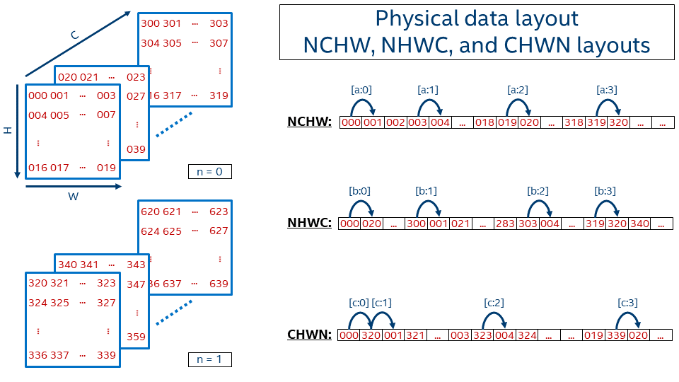
Figure 2: 三种 Data Layout Formats [1].
1 记忆方法: 反过来看, 如 NHWC, 先沿着 C 方向将数据拉直, 结束后跳到下一个 W, 然后换 H, 最后换 N.
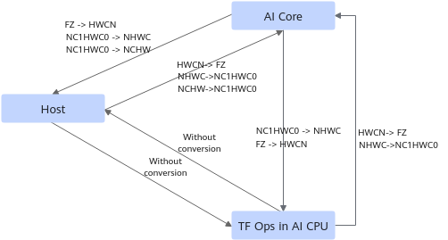
C0, C1 由 C 拆分得来, FZ 是另一种 tensor format.
Mental Picture of Tensors
同一个中括号内用逗号分割的元素一般被认为地位相同. 比如下面
1,2,3地位相同,[1,2,3]和[4,5,6]地位相同.Tensor size: 笔者习惯从最内层中括号开始读起, 每层中括号相同地位的元素个数即为该维度的大小, 从右向左 列出来即为 tensor shape.
比如:
torch.Size([2, 4])应解读为两个
[....]而不是 4 个[..].这里留两个练习, 给出下面两个 tensor 的 shape:
t = torch.tensor([ [ [1], [2], [3], [4] ], [ [5], [6], [7], [8] ], [ [9], [10], [11], [12] ] ]) u = torch.tensor([ [ [ [ [1] ] ], [ [ [2] ] ] ] ]) print(t.shape) # 输出: torch.Size([3, 4, 1]) print(u.shape) # 输出: torch.Size([1, 2, 1, 1, 1])
当我们说一个「维度」时我们在谈论什么?
每个维度看到的「元素」都是「片面」且「抽象」的. 比如下面的
4这个维度看见的画面仅仅是蓝色的「切片」, 而且它无法分清三个蓝色条条的区别.后文很多算子都有
dim这个参数, 说明这个算子作用在这个「维度」上. 对维度4来说, 就是同时作用在所有的蓝色切片上!
Figure 4: 每个维度即不能看到其元素内部 (「抽象」), 也无法看到外部 (「片面」).
Tensor Operations
Tensor 形状改变 (einops 库)
einops提供了方便的 API 来改变 tensor 的形状.
所有 Tensor 形状变化构成群, 可由下面三个生成元 (Grouping, Transposition, Concatenation) 生成:
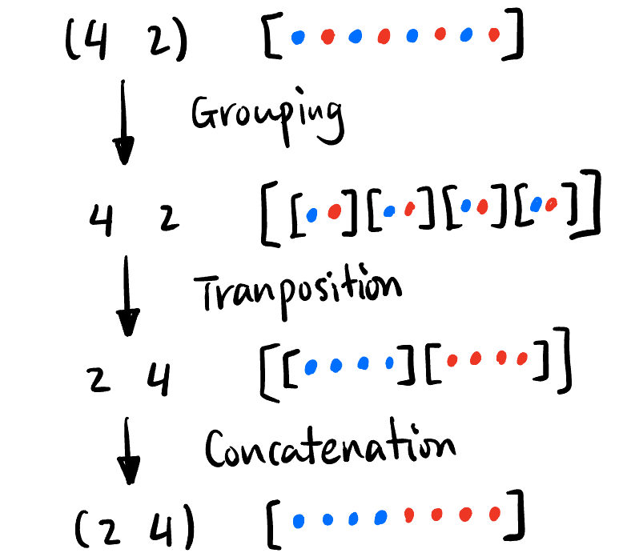
Figure 5: Tensor 变形的三个生成元. import torch from einops import rearrange t = torch.tensor([1,2,3,4,5,6,7,8]) t = rearrange(t, '(b a) -> b a', a=2) # Grouping, t.shape = [4,2], t = [[1,2],[3,4],[5,6],[7,8]] t = rearrange(t, 'b a -> a b') # Transposition, t.shape = [2,4], t = [[1,3,5,7],[2,4,6,8]] t = rearrage(t, 'b a -> (b a)', a=4) # Concatenation, t.shape = [8], t = [1,3,5,7,2,4,6,8]Transposition 操作也可以用:
t.transpose(-1, -2) # 将 t 的最后两个维度交换如果
t是torch.Size([3, 4, 1]), 则变成torch.Size([3, 1, 4]).
小练习: 给出下面
t的操作过程和结果:import torch from einops import rearrange t = torch.tensor([ [ [1], [2], [3], [4] ], [ [5], [6], [7], [8] ], [ [9], [10], [11], [12] ] ]) t = rearrange(t, 'a (b1 b2) c -> (a c) (b2 b1)', b1=2) print(t.shape) # torch.Size([3, 4]) print(t) # tensor([[ 1, 3, 2, 4], # [ 5, 7, 6, 8], # [ 9, 11, 10, 12]])这里的变形可以拆成:
'a (b1 b2) c -> a (b2 b1) c -> a c (b2 b1) -> (a c) (b2 b1)'
Tensor 切分
chunk()将一个 tensor 且成相等大小的多个 tensor.下面代码
chunk(num, dim)代表将维度dim的「切片」分成num份.import torch t = torch.tensor([ [ 1,1,4,4 ], [ 2,2,5,5 ], [ 3,3,6,6 ] ]) # torch.Size([3, 4]) a, b = t.chunk(2, dim=1) # a = tensor([[1., 1.], # [2., 2.], # [3., 3.]]) # b = tensor([[4., 4.], # [5., 5.], # [6., 6.]])
Tensor 乘加
Tensor 的基础运算包括:
- Element-wise multiplication:
+,-,*,/都是逐点的. - Matrix-like multiplication:
@(等价于torch.matmul()函数).注意当对高维张量进行矩阵乘法的时候, 只要求最后两个维度满足矩阵相乘的规定 (比如 ) 即可, 前面的维度一般要求相同好进行两两配对 (见 Figure fig-tensor-matmul).
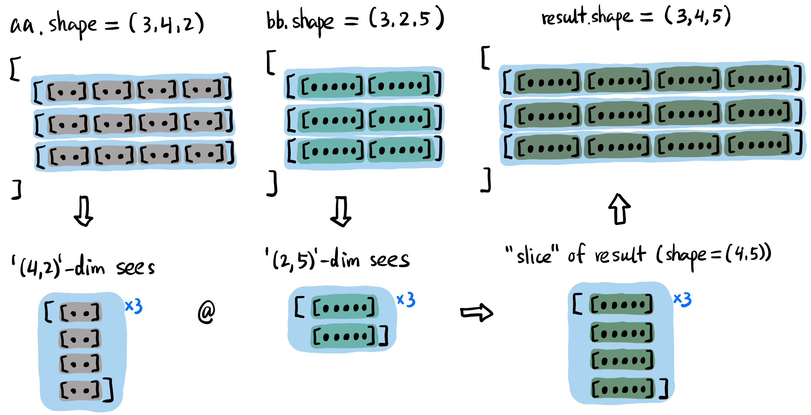
Figure 6: aa和bb矩阵乘法得到result的过程, 前面的维度 (3) 要求相同.思考张量矩阵乘法时将最后两维度的一个「切片」想象出来即可, 前面的维度只是这个过程的结构化重复
- 比如 Figure fig-tensor-matmul 中只需要将右下角的「切片」按照前面的维度
3的结构放好就行, 这里很简单直接拼接即可; 如果aa和bb前面的维度不是3而是复杂点的比如(2,4,1), 思考方式没有任何变化.
- 比如 Figure fig-tensor-matmul 中只需要将右下角的「切片」按照前面的维度
- Element-wise multiplication:
Tensor Broadcasting: 上面两种运算都支持 broadcasting, 指 左侧缺少的维度 或者 不匹配的相应维度是
1的维度都会自动复制成与另一个张量一样的:import torch aa = torch.randn(2,3,6,5,4) # base tensor bb = torch.randn( 3,6,5,4) cc = torch.randn(2,3,6,5 ) dd = torch.randn(2,3, 5,4) ee = torch.randn(2,3,1,5,4) ff = torch.randn(2,3,2,5,4) ## Element-wise operation (+ - * / 都是逐点的) add1_ew = aa + bb # 可以自动填充左侧维度, add1_ew 大小 [2,3,6,5,4] # add2_ew = aa + cc # 不能自动填充右侧维度! # add3_ew = aa + dd # 不能自动填充中间维度! add4_ew = aa + ee # 1 维度自动复制 6 份, add4_ew 大小 [2,3,6,5,4] # add4_ew = aa + ff # 中间的 2 维度不能自动复制 3 份! (虽然理论上是可以定义的) gg = torch.randn(2,3,6,4,5) hh = torch.randn(2,3,6,1,5) ## Matrix multiplication (@ 与 torch.matmul() 函数效果一样) matmul1 = aa @ gg # 最后两个维度满足矩阵相乘要求就行, matmul1 大小 [2,3,6,5,5] matmul2 = aa @ bb.transpose(-1,-2) # 可以自动填充左侧维度, matmul2 大小 [2,3,6,5,5] # matmul3 = aa @ dd.transpose(-1,-2) # 不能自动填充中间维度! matmul4 = aa @ ee.transpose(-1,-2) # 1 维度自动复制 6 份, matmul4 大小 [2,3,6,5,5] # matmul5 = aa @ ff.transpose(-1,-2) # 中间的 2 维度不能自动复制 3 份! (虽然理论上是可以定义的) # matmul6 = aa @ hh # 最后两个维度必须严格满足矩阵相乘规定, 没有 broadcasting 的说法.
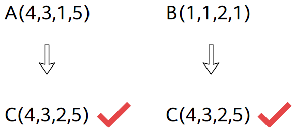
Layers in NN
下面我们列举一些神经网络中的一些层, 它们仅仅是对 tensor 的一些操作.
带参数的层
Convolution 卷积层
匹配 NCL 或 NCHW 中的 C.
Conv1d和Conv2d输入张量必须为NCL和NCHW格式且维度正确, 左边缺少维度自动补 1, 左边多了维度会报错.photos1d = torch.randn(2,3,20) photos1d_ = torch.randn(3,20) # 也可以 # photo1d = torch.randn(2,4,20) # 报错: 维度不匹配 # photo1d = torch.randn(2,3,20,5) # 报错: 维度多了 t1 = nn.Conv1d(in_channels=3, out_channels=6, kernel_size=3, padding=1)(photos1d) photos = torch.randn(2,3,5,4) photos_ = torch.randn(3,5,4) # 也可以 # photo = torch.randn(2,6,5,4) # 报错: 维度不匹配 # photo = torch.randn(1,2,3,5,1) # 报错: 维度多了 t2 = nn.Conv2d(in_channels=3, out_channels=6, kernel_size=3, padding=1)(photos)
Linear 线性层
只要匹配最右边的维度即可, 左边可以随便加多少 (按相同操作处理).
t = torch.randn(2,10)
t_ = torch.randn(2,3,5,1,2,10) # 也可以
t1 = nn.Linear(in_features=10, out_features=5)(t) # t1.shape = [2,5]- Linear: 没有非线性. \(y = Wx+b.\)
- MLP/FCN: 多层 Linear 中间夹非线性.
- FFN: 与 RNN 相对, 数据流动单项的所有网络都可以叫 FFN, 但通常指 Transformer 中 Attention 后面的 MLP.
Normalization 归一化层
选择 tensor 的某些维度的元素作为整体进行归一化, 传入的参数非常恼火, 理解不了就忽略吧.
import torch
photos = torch.randn(10, 3, 224, 224) # [N,C,H,W]
bn = nn.BatchNorm2d(num_features=3) # 参数填写 C 的数值
ln = nn.LayerNorm(normalized_shape=[3,224,224]) # 参数填写 [C,H,W], 为什么要这样, 我真佛了
my_norm = nn.LayerNorm(normalized_shape=[224,224]) # 也可以定制, 即将最后两个维度视为求均值和方差的整体.Post-norm 和 Pre-norm
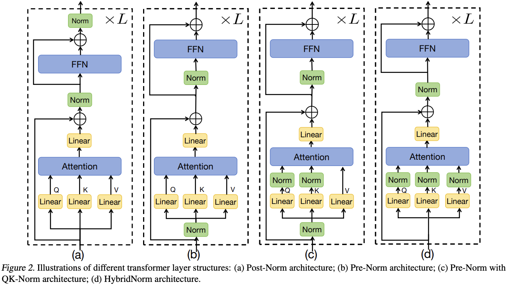
Figure 8: Norm 层可以放在重要的模块 (Attention/FFN) 前面 (Pre), 后面 (Post) 或混合来
Normalization 指对 tensor 的某些数据当作整体 (Figure fig-norm 的蓝色区域), 算 \(\mu\) 和 \(\sigma^2\), 然后对该区域的每个元素 \(x_i\):
\[ \hat{x}_i = \frac{x_i - \mu}{\sigma} \]
最后这个区域内的所有元素 \(\hat{x}_i\) 还会被统一处理为:
\[ y_i = \gamma \hat{x}_i + \beta \]
这就是 Norm 层参数的来源, 可以算算参数量如何决定.
Norm 层会加入神经网络的很多地方, 本质上是在给神经网络加入 Inductive Bias! 即告诉神经网络哪些数据是类似的 (满足同一个分布, 从而将他们等地位化 (即归一化)).
由于 Norm 层经常用于处理图片的 4 维张量 \([N,C,H,W]\) 2 (\([10, 3, 224, 224]\) 表示 \(10\) 张 \(224\times 224\) RGB 图片), 所以会用图片处理的维度来描述不同蓝色区域的选择, 分为:
- BN (Batch Normalization): 对 output tensor 中相同 Channel 的元素进行归一化.
- 之所以叫 Batch Norm 是因为图像处理中 output tensor 的一个 channel 对应 parameter tensor 的一个 batch. 为什么不叫 Channel Norm!? SB.
- LN (Layer Normalization): 对 output tensor 的一个 batch 中所有元素进行归一化.
- LLM 常用.
- IN (Instance Normalization)
- GN (Group Normalization)
- BN (Batch Normalization): 对 output tensor 中相同 Channel 的元素进行归一化.
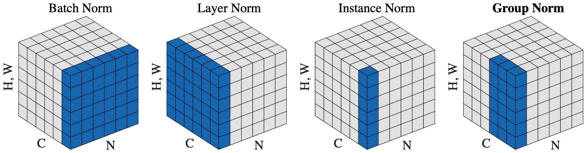
2 \(N\) 表示 batch.
Attention 注意力层
torch中自带的MultiheadAttention要求输入必须为NLE格式, 其中N是 batch (可以同时处理多个句子!),L是句子长度,E是 embedding 维度. 下面的例子由 Figure fig-mha-compute 诠释:t = torch.randn(1, 4, 6) attn = nn.MultiheadAttention(embed_dim=6, num_heads=3) output, _ = attn(t, t, t) # Self-attention print(output)
- 一个 Attention head 里面的 Inductive Bias 分析:
- Query \(Q\): Hey, do you all have anything relevant in terms of <syntax> for me?
- Key \(K\): Here is what I can offer in terms of <syntax>.
- Score: How relevant is what you guys offer in terms of <syntax>?
- Value \(V\): What direction in the embedding space should I move to capture <syntax> information?
- Multi-head: 相当于问很多个不同的问题, 即改变 “<>” 里面的内容, 比如 <meaning>, <irrelevance>, <description>, etc.
合并多个 head 输出的向量可以用相加或者拼接.
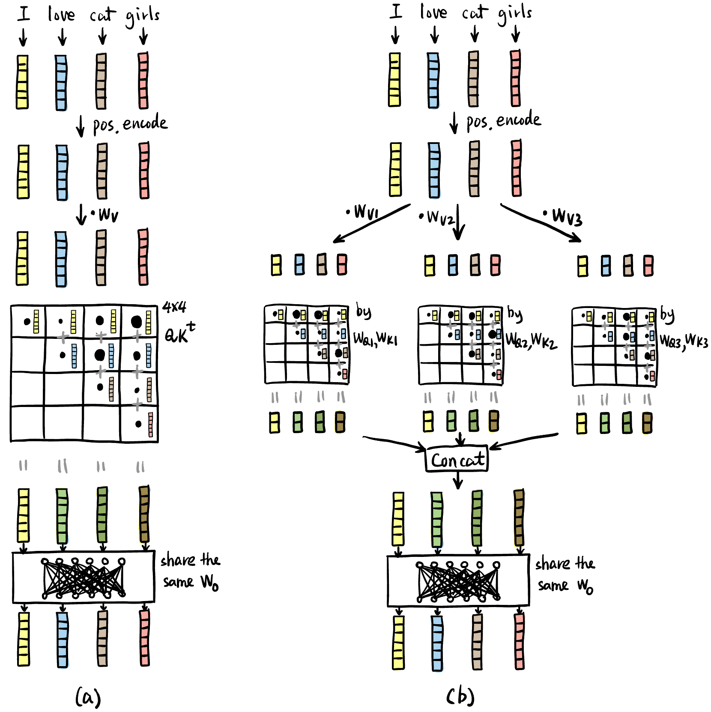
Figure 10: (a) Single Head Attention; (b) 3-head Attention. ( dim = 6,dim_head = 2,heads = 3,inner_dim = 2*3 = 6 = dim)
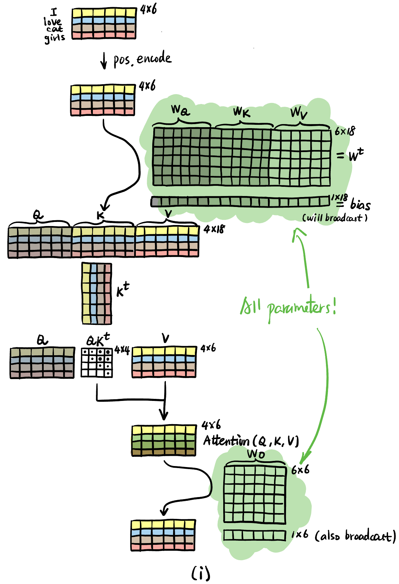
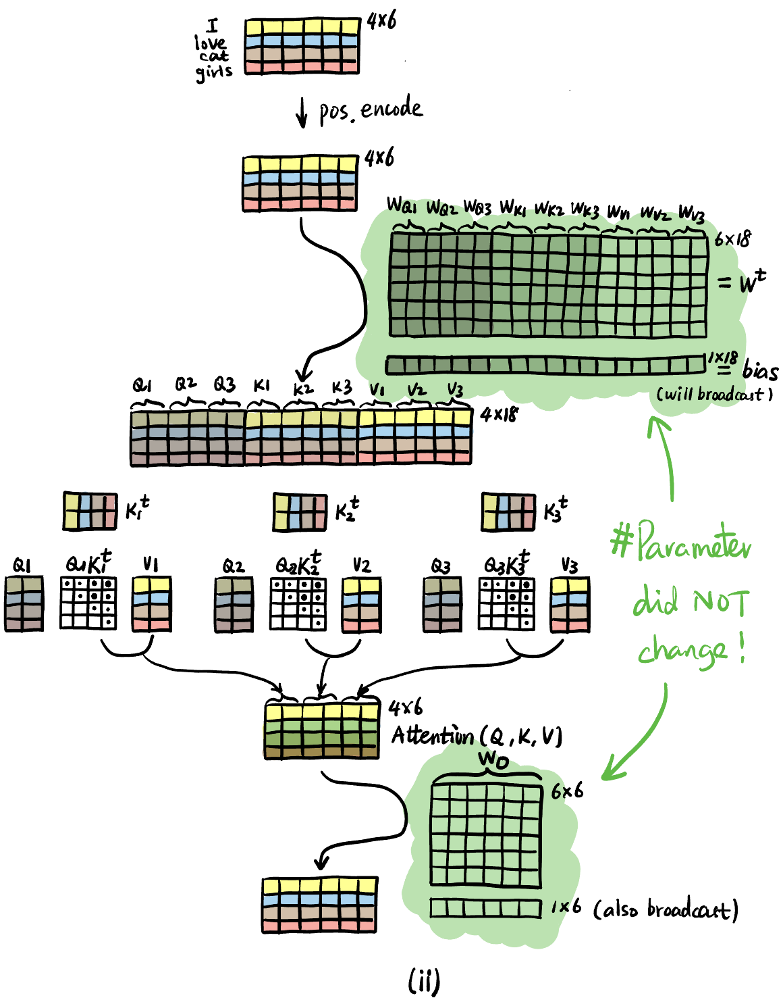
注意
MultiheadAttention里面自带了一个不改变维度的全连接层, 这个并不是 3b1b 视频中的 FFL, 真正的 attention block 还包括LayerNorm,Dropout, Residual Connection. 下面的代码对应 Figure fig-pre-post (b).class AttentionBlock(nn.Module): def __init__(self, embed_dim, hidden_dim, num_heads, dropout=0.0): super().__init__() self.layer_norm_1 = nn.LayerNorm(embed_dim) self.attn = nn.MultiheadAttention(embed_dim, num_heads, dropout=dropout) self.layer_norm_2 = nn.LayerNorm(embed_dim) self.linear = nn.Sequential( nn.Linear(embed_dim, hidden_dim), nn.GELU(), nn.Dropout(dropout), nn.Linear(hidden_dim, embed_dim), nn.Dropout(dropout) ) def forward(self, x): x = self.layer_norm_1(x) x += self.attn(x, x, x)[0] # Residual Connection x = self.layer_norm_2(x) x += self.linear(x) # Residual Connection return x
无参数的层
「切片」操作: 对 tensor 某一维度的处理.
Softmax: 下面代码
Softmax(dim=1)表示在t的第 2 个维度「切片」的整体做 softmax.t = torch.tensor([ [ 1,1,1,1 ], [ 2,2,2,2 ], [ 3,3,3,3 ] ], dtype=torch.float32) # torch.Size([3, 4]) t = nn.Softmax(dim=1)(t) # tensor([[0.2500, 0.2500, 0.2500, 0.2500], # [0.2500, 0.2500, 0.2500, 0.2500], # [0.2500, 0.2500, 0.2500, 0.2500]])其它操作
- 激活函数:
SiLU() - 恒等映射:
Identity() - Dropout: 训练时随机置 0, 推理时自动关闭.
- 下采样:
AvgPool2d()
- 激活函数:
其它
DSC 深度可分离卷积
我们直接举例说明 DSC (Depthwise Separable Convolution) 如何减少计算量:
- 参数:
- Input 输入信息: \((7\times 7) \times 8 = 392\) (\(8\) 个 channel).
- Output 输出信息: 同上.
- Filter 卷积核:
- 平面 (2D) 大小: \(3 \times 3 = 9\).
- 立体 (3D) 大小: \((3\times 3) \times 8 = 72\).
- 张量 (4D) 大小: \((3\times 3) \times 8 \times 8 = 576\). (最后的 \(8\) 是卷积核个数 (= 输出通道数), 注意 HWCN 规范).
- Figure fig-normal-conv 中每个「立体核」都会对 Input 进行扫描, 姑且将「闪」一下称为一次「快照」.
- Stride = 1 (
s1). - Padding = 1 (Figure fig-normal-conv 的灰色部分).
- 常规卷积层 (见 Figure fig-normal-conv):
- 参数量 = 一个立体核参数量 + 有几个立体核 \(= (72+1) \times 8 = 584\) (别忘了每个卷积核还有有一个 bias 参数).
- MAC3 = 「闪」一次的 MAC \(\times\)「闪」的总次数 \(= 72 \times 392 = 28224\).
- FLOPs = MAC \(\times 2 = 56448\).
3 算 MAC 的时候这样思考: 每「闪」一下都算了 \(72\) 次乘法和 \(71\) 次加法, 哦不对! 最后还要加 bias, 所以加法也是 \(72\) 次 (即 MAC=72); 而输出的每个「小方块」都对应一次「快照」! 这两个数乘一下就是总 MAC 数了.
- DSC (见 Figure fig-dsc):
- 参数量
- Depthwise 部分 \(= (9+1) \times 8 = 80\).
- Pointwise 部分 \(= (8+1) \times 8 = 72\).
- 总共 \(80 + 72 = 152\).
- MAC
- Depthwise 部分 \(= 9 \times 392 = 3528\).
- Pointwise 部分 \(= 8 \times 392 = 3136\).
- 总共 \(3528 + 3136 = 6664\) (比常规卷积小了 \(4\) 倍多!).
- FLOPs = MAC \(\times 2 = 13328\).
- DSC 相当于将 channel 之间和 spatial 之间的信息混合方式分开训练.
- DSC 还可以有 Depth multiplier 深度乘子 和 Group 的概念. Depth multiplier 指每个输出通道不一定要对应一个卷积核, 也可以对应两个卷积核 (深度乘子 \(=2\)), 并产生两个输出通道. Group 见 Figure fig-dsc-group.
- 参数量


Diffusion Models
Score-based Model
- 所有等大小 (设总共 \(D\) 个像素) 的图片构成 Image Space \(\mathbb{R}^D\).
- Image space 中每个点都是一张图片.
- 但大部分点对应的图片都没有意义, 设某点 \(\mathbf{x} \in \mathbb{R}^D\) 对应的图片有意义的概率为 \(p_{\text{data}}(\mathbf{x})\).
- 这相当于说在 \(\mathbb{R}^D\) 上存在一个确定的标量场, 只是没人知道它的表达式.
- 你让我解释一下一张图片有意义的「概率」是个什么玩意儿? 这是人为定义出来的, 也许你可以理解为「这张图片有意义的概率为 \(50\%\)」意思是给 100 个人看平均会有 50 个人觉得它有意义. 但物理世界生活中有没有概率这件事都是有争议的, 也许压根不用定义「概率」这个变量就可以描述世界了呢 (就像费曼的路径积分一样).
- Score vector field:
- 动机:「图片生成」相当于在 \(\mathbb{R}^D\) 中采样, 尽量采到概率大的点, 对吧? 想想看, 直接采样好像有点难实现. 如果能随便在 \(\mathbb{R}^D\) 里面取一个点, 然后知道它的概率标量场的梯度, 那就可以沿着梯度上升的方向移动, 逐步向概率大的点靠近! 完美!
- 但实际情况是: 即使我们知道了概率标量场的梯度场, \(\mathbb{R}^D\) 中大部分点的梯度模长都几乎是 0, 根本动不了.
- 小怎么办? 先取 \(\log\) 再求梯度呗, 鱼逝定义: \[S \equiv \nabla \log p_{\text{data}}: \mathbb{R}^D \to \mathbb{R}^D\] 为 \(p_{\text{data}}\) 的 Score vector field! (记为 \(S\)).
- score 听起来像是一个标量, 但它其实是一个向量场.
- 这个向量场就是我们要找的 (用一个神经网络 \(S_\theta\) 来拟合它!)
- \(S\) 不是随时间变化的, 是固定的!
- 如何训练呢?
Autograd 机制
Motivation
- 如何在计算机中进行微分?
Manual Differentiation: 人工推导导数公式, 然后写进代码.
Symbolic Differentiation: 计算机符号化地推导导数公式, 然后生成代码 (Mathematica 就是这么干的)
Numerical Differentiation: 用数值方法近似地计算导数.
Automatic Differentiation: 通过链式法则和计算图, 自动地计算导数.
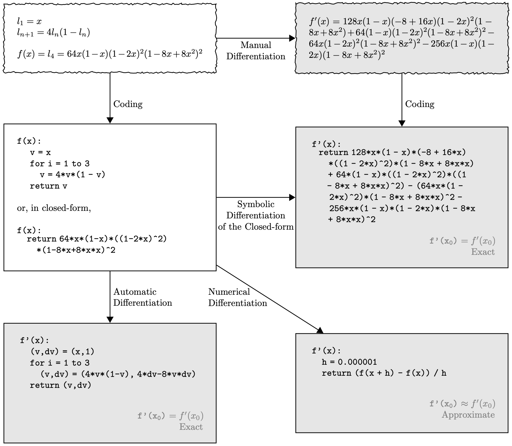
Figure 16: 计算机中微分的 4 种方式 [5].
- 放在 ML 的场景下, 一个神经网络可能有几十亿的参数, 每个参数都要求梯度, 手动推导不可能完成! 符号化推导也会导致表达式爆炸, 数值方法精度又不够好. 但是神经网络的函数不是随意的函数, 它是高度算子化和分层的. 我们希望导数的信息能自动沿着计算的路径 (Computational Graph) 反向传播!
- 用「传播」这个词是因为神经网络是高度分层的结构, 数据之间有明显的依赖关系 (partially-ordered).
- 用「自动」这个词是因为我们希望一句
loss.backward()就能像遍历一个树一样完成所有的梯度计算. - 而且我们希望在程序看来每个梯度计算都是「局部」的, 运行的函数并不知道自己在传播一个大计算图.
- 这个理论基础是 Chain Rule 链式法则! 我们这样解读链式法则: 要求 \(y\) 关于变量 \(v\) 的导数, 只要知道下面三类信息 (在 Figure fig-chain-rule 标为蓝色):
- \(v\) 参与了哪些算子的运算;
- 这些算子的输出 (当然每个算子只有一个) 分别对 \(y\) 的导数;
- 这些算子的其它输入的值.
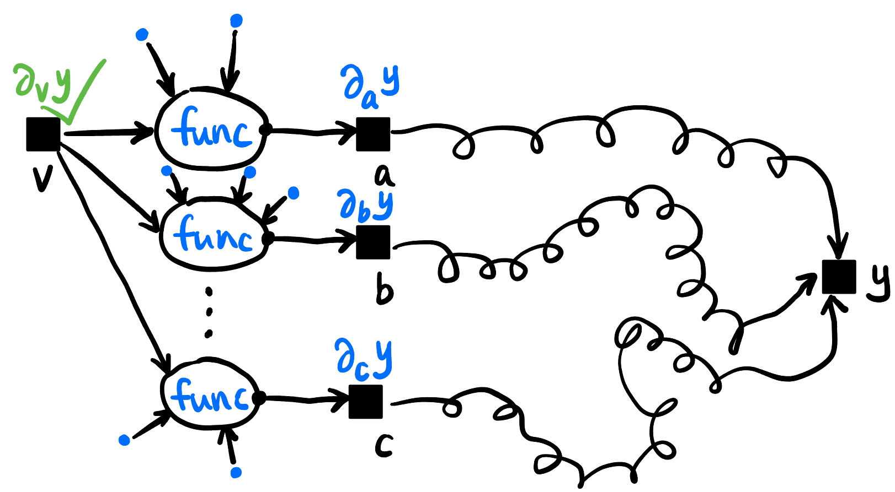
Figure 17: Chain Rule 的局部视角, 求 \(\partial_v y\) 只需要知道蓝色的信息, 对于 \(a,b, \ldots, c\) 与 \(y\) 的关系不需要知道!
- 这个理论基础是 Chain Rule 链式法则! 我们这样解读链式法则: 要求 \(y\) 关于变量 \(v\) 的导数, 只要知道下面三类信息 (在 Figure fig-chain-rule 标为蓝色):
考虑式子 [6]: \[ y := \ln x_1 + x_1 x_2 - e^{x_2} \tag{1}\]
可以由以下图表示:
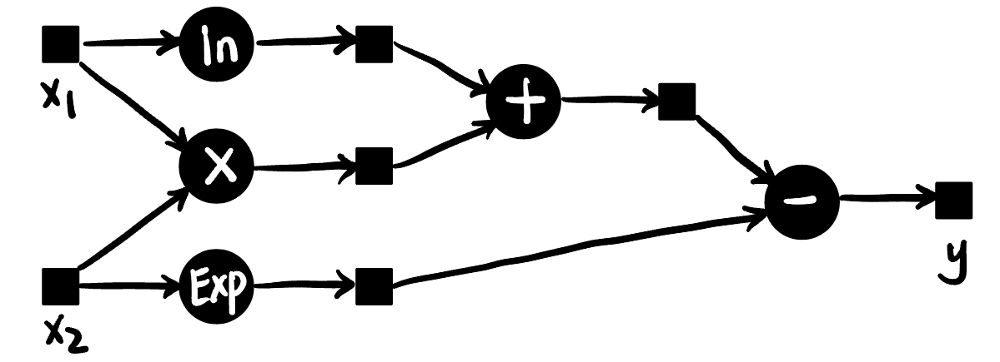
我们希望计算 \(y\) 关于 \(x_1, x_2\) 在 \((x_1, x_2) = (2, 5)\) 处的梯度.
Forward propagation: 首先进行前向传播, 目的是计算出中间变量的数值 (为什么要算呢, 因为链式法则需要知道中间变量的值!):

Figure 19: Forward propagation. Backward propagation: 如 Figure fig-ex-backward, 蓝色数值代表 \(y\) 对该节点的导数.

Figure 20: Backward propagation.
可知:
\[ \begin{aligned} \partial_{x_1} y &= 5.5 \\ \partial_{x_2} y &= -146.4 \end{aligned} \]
Minimal Implementation
我们将 Figure fig-ex-forward 的棕色方块建模为 Tensor 类, 青色圆形建模为算子比如 Add. 这是 autograd 重点关注的两个结构. 现在我们实现 Equation eq-example 的 autograd 库 (只实现了必要的算子, adapted from [7]). 主要关注 Tensor 类的 backward() 方法和各个算子的 backward() 方法的相互调用!
mytorch/tensor.py
from __future__ import annotations
from typing import Optional
import numpy as np
class Tensor:
def __init__(self, data: np.ndarray, requires_grad=False, operation=None):
# Payload
self.data = data
# Metadata
self.requires_grad = requires_grad
if self.requires_grad:
self.grad = np.zeros_like(data, dtype=np.float32)
self.operation = operation # What operation cls created this tensor
self.children = [] # What other tensors are created from this tensor
# This method is called by the operation backward()
def backward(self,
grad_: Optional[np.ndarray] = None, # The downstream operator pass this gradient for you
z: Optional[Tensor] = None): # Which child tensor is passing the gradient
if not self.requires_grad:
return "Cannot backpropagate on a tensor that does not require gradients."
if grad_ is None: # Called only the first time from loss.backward()
grad_ = np.ones_like(self.data, dtype=np.float32) # Set a tiny nudge of ones
self.grad += grad_ # Aggregate gradients from that children (but possibly not all yet)
if z is not None: # NOT called only the first time
self.children.remove(z) # I heard the gradient from you, no need to wait for you anymore
if self.operation:
if not self.children: # Received grad_ from all children, ready to pass grad upstream
self.operation.backward(self.grad, self)
def zero_grad(self):
''' Sets the gradient of this tensor to zero. '''
if self.requires_grad:
self.grad = np.zeros_like(self.data)
# Some basic operators, more operators must be called via their classes below
def __add__(self, other: Tensor) -> Tensor:
op = Add()
return op.forward(self, other)
def __neg__(self) -> Tensor:
op = Neg()
return op.forward(self)
def __sub__(self, other: Tensor) -> Tensor:
return self + (-other)
def __mul__(self, other: Tensor) -> Tensor:
op = Mul()
return op.forward(self, other)
# Paramaters are exact the same as Tensors except they always require gradients to be updated.
class Parameter(Tensor):
''' Subclass of Tensor which always tracks gradients. '''
def __init__(self, data, requires_grad = True, operation = None) -> None:
super().__init__(data, requires_grad=requires_grad, operation=operation)
# These are just operators
class Add:
def forward(self, a: Tensor, b: Tensor) -> Tensor:
# Record which two tensors were added
self.parents = (a, b)
# Create result tensor z
requires_grad = a.requires_grad or b.requires_grad
data = a.data + b.data
z = Tensor(data, requires_grad=requires_grad, operation=self)
# Side effects to a, b
a.children.append(z)
b.children.append(z)
return z
def backward(self, dz: np.ndarray, z: Tensor):
a, b = self.parents
if a.requires_grad:
da_ = dz
a.backward(da_, z)
if b.requires_grad:
db_ = dz
b.backward(db_, z)
class Neg:
def forward(self, a: Tensor) -> Tensor:
# Record which tensor was negated
self.parent = a
# Create result tensor z
requires_grad = a.requires_grad
data = -a.data
z = Tensor(data, requires_grad=requires_grad, operation=self)
# Side effects to a
a.children.append(z)
return z
def backward(self, dz: np.ndarray, z: Tensor):
a = self.parent
if a.requires_grad:
da_ = -dz
a.backward(da_, z)
class Mul:
def forward(self, a: Tensor, b: Tensor) -> Tensor:
# Record which two tensors were multiplied
self.parents = (a, b)
# Create result tensor z
requires_grad = a.requires_grad or b.requires_grad
data = a.data * b.data
z = Tensor(data, requires_grad=requires_grad, operation=self)
# Side effects to a, b
a.children.append(z)
b.children.append(z)
return z
def backward(self, dz: np.ndarray, z: Tensor):
a, b = self.parents
if a.requires_grad:
da_ = dz * b.data
a.backward(da_, z)
if b.requires_grad:
db_ = dz * a.data
b.backward(db_, z)
class Exp:
def forward(self, a: Tensor) -> Tensor:
# Record which tensor was exponentiated
self.parent = a
# Create result tensor z
requires_grad = a.requires_grad
data = np.exp(a.data)
z = Tensor(data, requires_grad=requires_grad, operation=self)
# Side effects to a
a.children.append(z)
return z
def backward(self, dz: np.ndarray, z: Tensor):
a = self.parent
if a.requires_grad:
da_ = dz * z.data # since d(exp(a))/da = exp(a)
a.backward(da_, z)
class Log:
def forward(self, a: Tensor) -> Tensor:
# Record which tensor was logged
self.parent = a
# Create result tensor z
requires_grad = a.requires_grad
data = np.log(a.data)
z = Tensor(data, requires_grad=requires_grad, operation=self)
# Side effects to a
a.children.append(z)
return z
def backward(self, dz: np.ndarray, z: Tensor):
a = self.parent
if a.requires_grad:
da_ = dz / a.data # since d(log(a))/da = 1/a
a.backward(da_, z)
写一个测试程序:
tensor-backward.py
import mytorch as torch
import numpy as np
x1 = torch.Tensor(np.array([2]), requires_grad=True)
x2 = torch.Tensor(np.array([5]), requires_grad=True)
v1 = torch.Log().forward(x1)
v2 = x1 * x2
v3 = torch.Exp().forward(x2)
v4 = v1 + v2
loss = v4 - v3
print("loss =", loss.data)
loss.backward()
print("x1.grad =", x1.grad)
print("x2.grad =", x2.grad)
运行结果:
loss = [-137.72001192]
x1.grad = [5.5]
x2.grad = [-146.41316]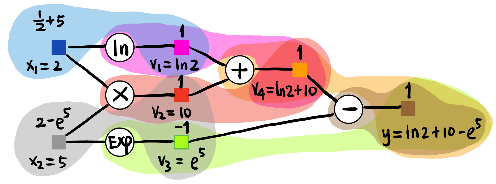

Fine-tuning 微调
LoRA
- 在 Pre-training 完成后, 需要针对特定的任务对神经网络的权重进行微调 (其实还是训练). 对于一个 \(a \times b\) 的矩阵 \(W\) (比如一个全连接层), 本来是要对它所有的 entry 找梯度 (即 \(\Delta W\)). 但是这样运算量非常大 (为 \(a \cdot b\)), 我们假设这个变化 \(\Delta W\) 可以被两个矩阵 \(A,B\) 的乘积近似表示: \[\Delta W = AB\] 这样就只需要对 \(A\) 和 \(B\) 找梯度了 (大小分别为 \(a \times r, r \times b\)), 计算量大大减少 (为 \(r \cdot (a+b)\)).
- 注意是对 \(\Delta W\) 低秩近似, 而不是 \(W\) 低秩近似!
- 这样做参数变化的自由度减少了.
- 一个示意的实现:
lora.py
# 一个示意的 LoRA 实现.
# 「示意」的原因是这里没有加载预训练权重, 也没有训练过程
import torch
import torch.nn as nn
import torch.nn.functional as F
# 一个带 LoRA 的线性层
class LinearWithLoRA(nn.Module):
def __init__(self, in_dim, out_dim, r=4, scale=1.0):
super().__init__()
# 冻结基础权重
self.base = nn.Linear(in_dim, out_dim)
self.base.weight.requires_grad = False # 冻结 base 权重
# LoRA 的低秩矩阵 A 和 B
self.A = nn.Parameter(torch.randn(r, in_dim) * 0.01) # r×in_dim
self.B = nn.Parameter(torch.randn(out_dim, r) * 0.01) # out_dim×r
self.scale = scale
def forward(self, x):
# 原始线性输出
out_base = self.base(x)
# 计算 Delta W = B @ A
delta_W = self.B @ self.A
out_lora = F.linear(x, delta_W * self.scale)
# 计算最终输出
return out_base + out_lora
# 测试
model = LinearWithLoRA(128, 64, r=8)
input = torch.randn(16, 128)
out = model(input)
print(out.shape)
- 实际上微调不涉及模型源代码的修改, 大概是这样:
lora-in-practice.py
# 导入模型和 tokenizer
from transformers import AutoModelForCausalLM, AutoTokenizer
model_name = "meta-llama/Llama-2-7b"
tokenizer = AutoTokenizer.from_pretrained(model_name)
model = AutoModelForCausalLM.from_pretrained(model_name)
# 生成 lora_model
from peft import LoraConfig, get_peft_model
lora_config = LoraConfig(
r=8, # 低秩近似的 rank
lora_alpha=16, # 缩放因子
lora_dropout=0.1, # dropout（正则化）
target_modules=["q_proj", "v_proj"],
task_type="CAUSAL_LM",
)
lora_model = get_peft_model(model, lora_config)
# 训练
from transformers import Trainer, TrainingArguments
training_args = TrainingArguments(
output_dir="./lora_finetuned",
learning_rate=2e-4,
num_train_epochs=3,
per_device_train_batch_size=8,
)
trainer = Trainer(
model=lora_model,
args=training_args,
train_dataset=my_dataset,
)
trainer.train()
# 保存微调后的模型
lora_model.save_pretrained("./my_lora_adapter")
YOLO
本章基本上是 YOLO V1 Bilibili 讲解 的笔记, 可以直接看视频学习.
Task Objective 任务目标
- 识别东西是什么
- 将东西的位置框起来
两类方法
解决这个问题的方法有两类:
- One-stage: 推理速度快, 可实时
- E.g., YOLO, SSD, RetinaNet
- Two-stage: 准确率高
- Region Proposal 候选区: 先从图片中提取出可能包含目标的 1000-2000 个区域, 然后对每个候选区进行目标对象识别操作.
- E.g., Faster R-CNN, Mask R-CNN, Cascade R-CNN
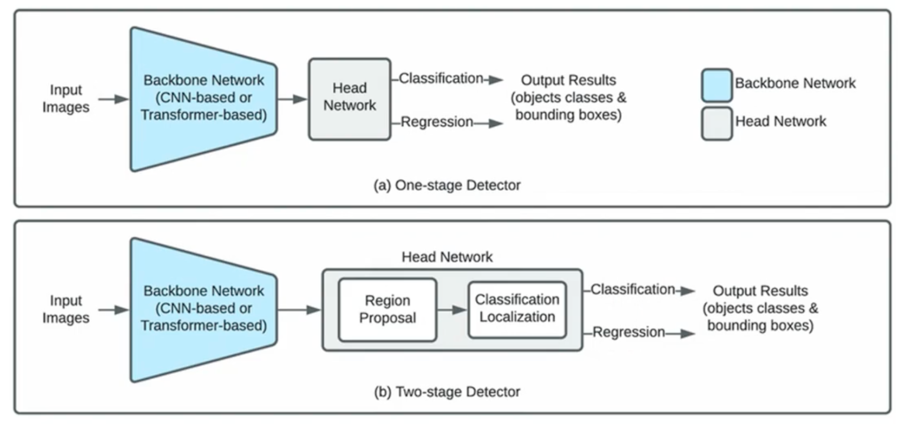
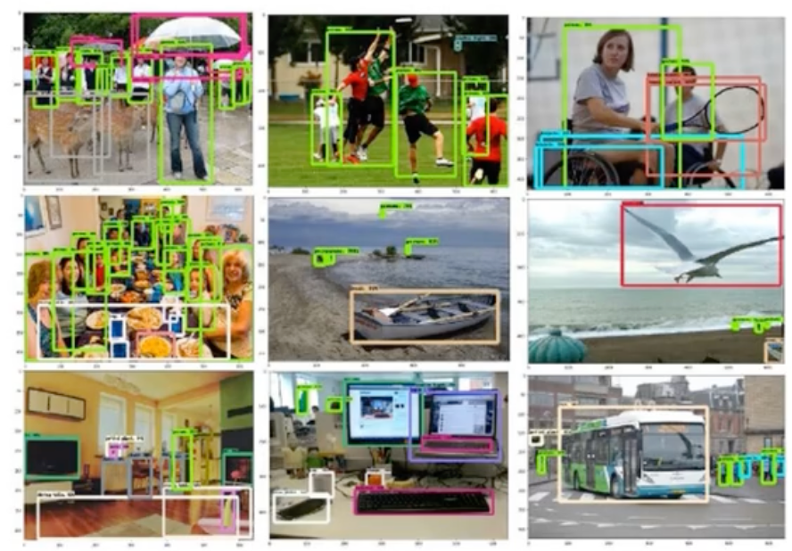
损失函数
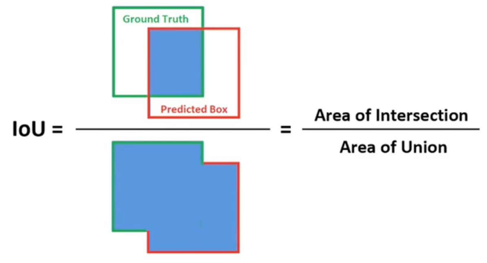
YOLO V1
Network Structure 网络结构
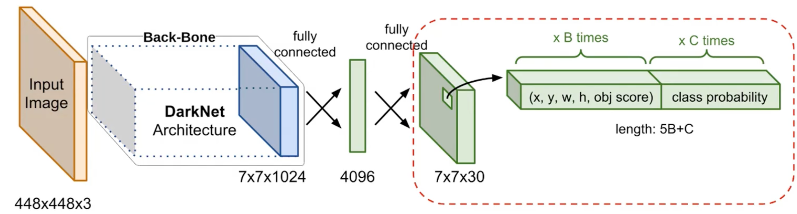
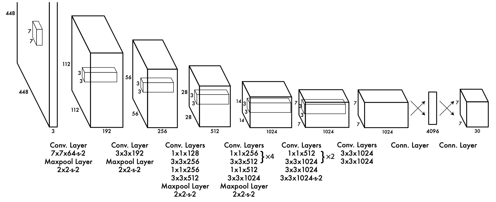
说明:
Figure fig-yolov1-back-bone:
-s-2表示 stride 步长为 2.输入输出:
- 输入是一张正方形的图片 (长宽像素各为 \(448\), 有 3 个通道: RGB).
- 输出的 tensor 大小为 \(7 \times 7 \times 30\)
Label Tensor 标签张量
MSCOCO 数据集需要先转换成另外一种形式 (Figure fig-yolo-v1-data-labeling) 再喂给 TOLO V1 神经网络 (即换一种形式打标签而已).
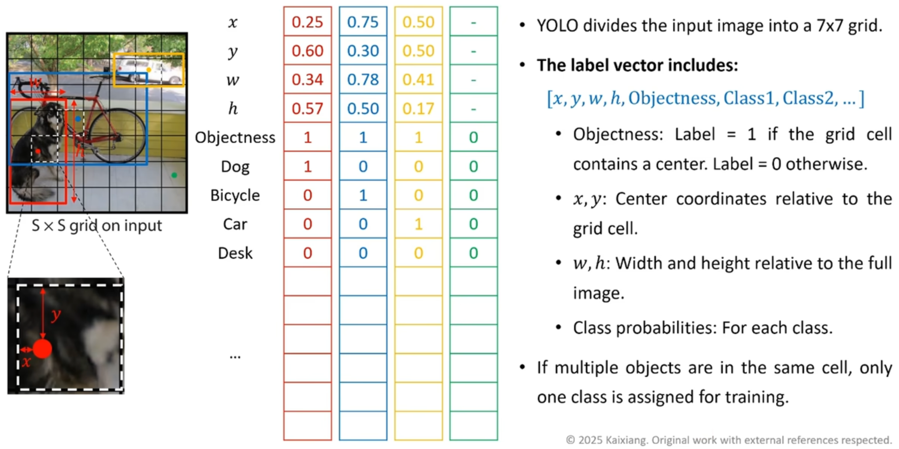
Figure 28: YOLO V1: \(S = 7\), 总共 每张图片都有 \(S \times S = 49\) 个 grid cell, 每一个 grid cell 都被一个 \(30 \times 1\) 的向量描述, 相当于一张图片都对应了一个 \(7 \times 7 \times 30\) 的 label tensor.
- Figure fig-yolov1-back-bone 中网络的输出也是一个 \(7 \times 7 \times 30\) 的 tensor, 但这是 Prediction Tensor 预测张量 (sec-prediction-tensor), 不能混为一谈.
如果有两个物体的中心点都落在同一个 grid cell 中, YOLO V1 只会保留其中一个.
Prediction Tensor 预测张量
TODO
Temperary Content
Don’t know where to put them by far.
写这篇文章的动机: To record and share the mental framework of ML personally. This framework is self-contained but I will quote later content even in the first chapter. Remember, one CANNOT ever learn anything just by reading any article from the top to the bottom and stopped once stucked.
This blog is under construction!
Change of Mind
I don’t think view neural networks as black boxes does any help towards understanding and inventing new networks.
对一个神经网络来说, 我们要站在它的角度考虑 up to what extend it could tell the difference of data? 比如图像处理的神经网络, 它肯定不知道输入的是一张图, 如果是一段文字呢? 如果对于很多类型的数据它都不能区分, 说明这个网络非常 general 但性能肯定很差.
I don’t see any advantages to view a NN as a black box!
Questions
梯度下降和反向传播的关系是什么?
我们算梯度是在什么空间里面?
梯度下降在 Transformer 里面是如何工作的?
- 只要是张量运算就能传播 (见 Autograd 机制).
Transformer 不改变 token 的个数, 为什么最后一个 token 的 logits 可以被用来预测下一个 token?
- 首先 decoder-only 架构的第 \(i\) 个 token 是前面所有 token embedding 信息的聚合. LLM 最初的设想就是通过前面所有文字预测下一个 token 是什么, 也就是说后一个 token 能且只能被前面所有 token 决定, 那么后一个 token 与前面所有 token 的信息聚合就是等价的! (你细品). 就像范畴论中的 universal property, 如果一个箭头跟所有其它的箭头都满足某种特定的关系, 那这个箭头就能被所有其它箭头定义, 或者说这个箭头本身就是其它所有箭头! 再比如很多力的合力, 是一个力对吧, 那知道这个力相当于知道了其它所有的力, 反之亦然.
Bellman Equation 跟 RL 的关系是什么?
Neural Network is Not So Different
目标: 找一个映射.
Frame Every Problem as a Mapping
运用 NN 解决问题的第一步就是将你的问题用一个映射来描述, 然后让计算机找这个映射. 这个映射还不是数学上那种精确的映射, 会有很多额外的问题需要考虑:
每个输入都需要有结果输出吗? 肯定不是的, 比如你给计算机一段随机文字让它续写, 它可以有输出, 但是我们肯定期望它给出一个「您给我的文字我看不懂」的回答嘛.
我们希望它每次输出的答案都不太一样, 比如每次续写一段故事. 所以这个映射一般也会要求要有随机性.
给计算机多少信息呢? 这一步很关键!
- 给的信息少了或者无关的信息效果肯定差, 比如你在没有任何先验的情况下告诉计算机你的性别, 要求它给你期末考试的答案. 有时候你甚至不知道你给的信息少没少. 比如在 This Video 中: 你有一个每天会给你做饭的朋友, 他按照一定规律每天给你做 \(A, B, C\) 三种食物中的一个. 你觉得它跟星期几、月份和你朋友的心情有关, 你搭建了一个 \(3\) 输入 \(3\) 输出的神经网络每天用历史数据训练. 但是实际上他只是按照 \(A\to B\to C\to A\to \cdots\) 的顺序给你做的, 只是你太傻没注意到, 也没将制作的时间输入给神经网络, 网络永远学不到这个规律! (这是 RNN, LSTM 出现的动机之一)
- 但其实你永远也给不出全部的信息和无比精确的问题描述! 比如你让计算机续写文字, 续写多少字呢? 用什么语言? 需要符合逻辑吗? 甚至什么是续写? 这些永远也给不出精确的描述. 我们希望计算机默认地理解这些东西.
以什么样的存储形式喂给计算机数据呢? (Vector 和 Tensor 出现的动机)
Communicate with Computer
把你知道的东西通过某种方式告诉计算机, that’s it.
世界上很多问题其实就是一个复杂的映射, 比如图像识别就是输入是图片, 输出是图片中的各种内容. 只不过这个函数存在于人类的大脑中, 无法写出显式的表达式. 人类想要强行把这个函数的表达式找到! 怎么找呢? 我们看到一棵树, 它为什么是一棵树呢? 每个像素都对它是一棵树做出了贡献, 但好像整体是一棵树又与单个像素毫无关系. 如果这个表达式存在, 那么它肯定非常复杂 (这里不能追求所谓的 “简洁与优美”). 但我们可以缩小一点范围, 用某种特定形式的函数来逼近所求. 也就是:
在一堆某种形式的映射里面 (参数化的函数空间 \(\mathcal{\hat{F}}\)) 找到一个映射 \(\hat{f}\) 来拟合一个复杂的映射 \(f: \mathcal{X}\to \mathcal{Y}\)
人们首先发现长成 Equation eq-fcnn 这种样子的映射仿佛有很强的拟合能力, 也就是不管你人脑中的模型有多复杂, 总是可以在下面形式的映射中找到合适的拟合.
\[ \hat{f}(x) = \sigma (W^{[L]} \cdots \sigma (W^{[2]} \sigma (W^{[1]} x + b^{[1]}) + b^{[2]}) + \cdots + b^{[L]}) \tag{2}\]
Equation eq-fcnn 很复杂对吧. 但是它可以用下面的图可视化出来:
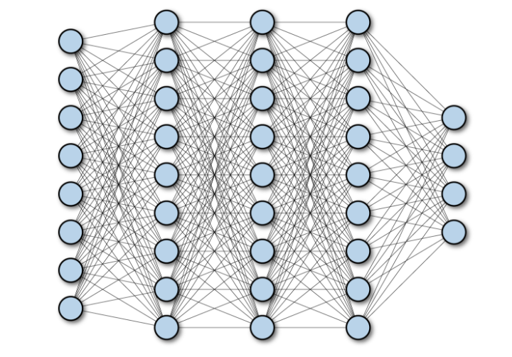
这张图放在这里太 cliché 了, 但是我想说的是: 我们对它太过熟悉了, 以至于认为选择这种参数化方法是理所应当、独一无二的.
(FCNN, CNN, Transformer是同一层面上的概念? FCNN 能做到的事情很多, 但是太general 了, 所以先猜测什么样的结构能更好地揭示规律 (比如卷积 (尊重了 \(\mathcal{X}\) 结构从而很可能能加速神经网络发现规律的过程?), 再比如 GNN), 然后加入它们来 帮助神经网络发现规律? “Differential Model” 我感觉 FCNN 和 CNN 的本质是一样的? CNN 的本质是 pre-trained FCNN (或者说?))
事实证明形如神经网络的那些参数化函数空间能够拟合绝大多数的复杂映射, 所以无脑选择这样的 \(\mathcal{\hat{F}}\) 就行了.
如果一个问题可以用以下的框架里面描述, 那么这个问题就可以用神经网络来解决!
「复杂的映射」
「复杂的映射」这个思想可以刻画和描述所有以下问题:
- Classification 分类问题: \(\mathcal{Y}\) 仅仅是没有任何结构的集合.
- 请说出下面例子的 \(\mathcal{X}\) 和 \(\mathcal{Y}\):
- Image Classification: 输入一张图片, 判断是猫还是狗还是其它的.
- Face Detection: 输入一张图片, 判断有没有人脸.
- Handwriting Recognition: 输入一张手写的数字, 判断是几. (虽然 \(\mathcal{Y}\) 有序结构, 但不关心)
- \(\mathcal{X}\) 是所有图片的集合, \(\mathcal{Y}\) 是所有类别的集合.
- 请说出下面例子的 \(\mathcal{X}\) 和 \(\mathcal{Y}\):
- Regression 回归问题: \(\mathcal{Y}\) 有序结构. (Generally speaking, 有拓扑结构4)
- 请说出下面例子 [10] 的 \(\mathcal{X}\) 和 \(\mathcal{Y}\):
- Linear Regression: 给定一个标量场, 用线性标量场来拟合. (相当于指定了 \(\mathcal{\hat{F}}\))
- Quantization: 根据市场情况、历史数据等, 预测明天的股票价格.
- 预测某个视频观看者年龄.
- 根据发送的控制信号, 预测机械臂在三维空间的坐标.
- 根据历史湿度、温度等天气信息, 预测某地明天的温度.
- 请说出下面例子 [10] 的 \(\mathcal{X}\) 和 \(\mathcal{Y}\):
4 序结构诱导的拓扑称为 Alexandrov 拓扑.
Sequence Models
TODO
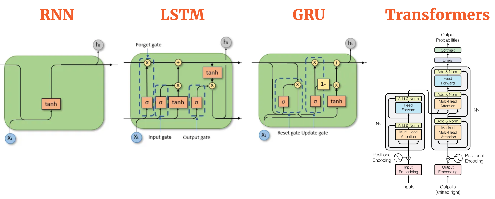
Design the Network
设想计算机可能会如何思考这个问题, 比如它需要记忆吗? 它需要关注上下文吗 (Transformer)? 然后设计出网络结构.
如果一个函数空间的所有元素都能用形式上相同的式子表达 (这个式子里面有一些可变的参数), 那么这个函数空间就是参数化的.
Linear Regression 的参数化函数空间同构5于 \(\mathbb{R}^2\):
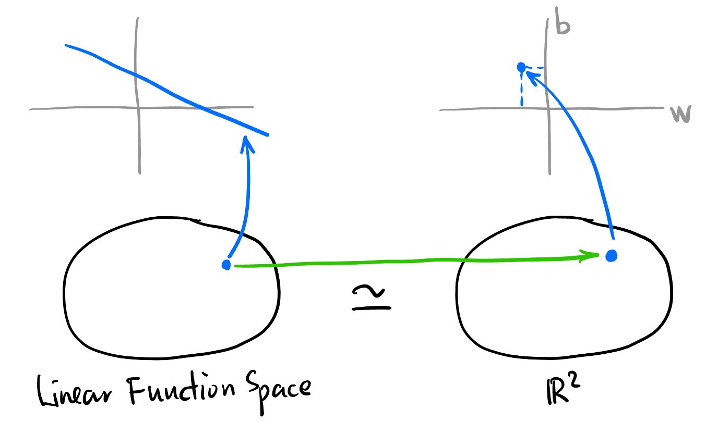
同构的 Mental picture
5 在拓扑向量空间的意义上: \[\{f: \mathbb{R}\to \mathbb{R} \mid f(x) = wx + b, w, b \in \mathbb{R}\} \simeq \{(w, b) \mid w, b \in \mathbb{R}\}\]
- 某个 CNN 的参数化函数空间同构于 \(\mathbb{R}^{200}\):
尊重 \(\mathcal{X}, \mathcal{Y}\) 中元素的结构
(升维、ask a lot of binary questions、编解码器、激活函数用什么类型 这些的联系是什么?)
(\(\mathcal{X}\) 为图片集合、文字、电路板、声音时分别有什么结构?)
(curse of dimension怎么解决?)
如果 \(\mathcal{X}\) 是一张图片的话, 我们有 “相邻” 点这种概念, 也就是说输入进 \(\hat{f}\) 的对象内部是有某些结构的, 但是 FCNN (a.k.a., MLP) 并不知道这些结构.
(引出 CNN 和 GNN)
Train the Network
(梯度下降, 各种优化器)
(梯度消失问题怎么解决、正则化、ResNet, 为什么ResNet有效等等话题)
Gradient Descent 梯度下降
- Loss function 损失函数: 函数空间 \(\mathcal{\hat{F}}\) 映到 \(\mathbb{R}\) 的标量场 \(L: \mathcal{\hat{F}} \to \mathbb{R}\), 由于 \(\mathcal{\hat{F}}\) 参数化, 所以 \(L\) 也可以看作是 \(\mathbb{R}^n \to \mathbb{R}\) 的函数.
- \(L\) 标量场如何确定呢?
- 用训练集中的所有样本点取平均来确定标量场 (“GD”, 计算量太大).
- 通过 (不放回地) 抽取训练集中的一个 Mini batch 来估计标量场 (“SGD / Minibatch SGD”)
- \(L\) 标量场如何确定呢?
torch.optim其它优化器:- Momentum: 通过加入历史速度来模拟惯性 (Moving Average), 受噪声影响更小.
- AdaGrad(Adaptive Gradient Descent)
- 一些参数
- Learning Rate 学习率
杂项
我发现要以线性的顺序来写这篇 blog 的话会增加很多不必要的复杂性, 所以接下来我直接按照本人的学习顺序进行整理.
CNN Padding:
为了解决输入输出大小不一致的问题, 可以引入 Padding.
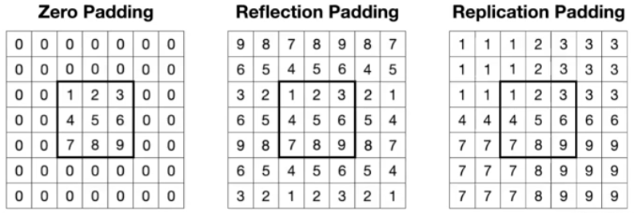
不同的 Padding, Pytorch 的默认为 zero padding (最常用 [12]) 要将各种问题设计成用机器学习的方法的 idea 非常重要. 它往往是一篇论文的核心 idea. 比如 word2vec 中提到的方法.
一个网络结构最初可能是为了解决某个具体问题而设计的, 但是它往往可以被推广到其它完全不同的问题上 (比如图像分类和文本生成、encoder only, etc. (TBD)).
一些本人的看法, 先起名字封装起来, 方便以后复用:
- 「降临派」(The Adventists): 人类已经不能靠自身的力量解决问题了, 需要一个全知全能的存在来拯救人类, 而 AI 正是「降临派」正在构建的上帝, 然而目前来看:
- 「巴别塔工程」 [13]: 人类设计 AI 这个「上帝」的过程 (即设计神经网络的过程) 非常的 ad hoc, 从 LSTM, Transformer 的 \(QKV\), MoE, etc., 人类试图通过分析自身如何理解文字和图像, 或者揣测计算机有可能可以如何理解文字和图像 (“Inductive Bias” [14]), 设计出一些不具美感、结构复杂拙劣的网络结构 (后文称「巴别塔上的砖块」) 来表征这个思考过程, 试图构建他们畅想的上帝. 经过几个月的训练后, 巴别塔上又叠了一个新的砖块, 比所有的 benchmark 都高了 \(1.3\%\), 最终可以在论文里面用抽象的数学符号装 13, 不用人话甚至直接隐藏设计这些结构的动机和思维轨迹, 以至于后来的人花费大量时间去揣摩作者拍脑袋的成果 (后文称为「语言不通的巴比伦人」). 总之, 我对目前降临派的 AI 研究方法持有很深的怀疑态度 (后文称为「不存在的巴别塔」) [15].
如何看待机器学习领域论文?
- 「巴别塔」上的每一个砖块都是作者 2 分钟的灵光乍现 + 1 个月的史山产出 + 3 个月的调参训练 辛苦得出的结果. 设想一下, 如果有一个预言家女巫能够在你的 idea 刚刚冒出来的时候就告诉你它的性能, 并且你每给出一组 multi-head 的数量就告诉你性能变化 (毕竟这都是确定可以实现的事了), 你还觉得 AI 论文和 transformer 结构是多么神圣伟大吗? 但是每个砖块的性能都必须经历训练和调参的过程, 而并不能直接数学推导出它的性能. 所以从某种角度讲, AI 论文就是一个无数搬砖者花时间精力构建的「查找表」, 它告诉你: “这种形状的砖性能是这样的, 如果你有类似形状的砖块, 我已经给你研究过了.” 你自己如何看待这些砖块, 以及它们如何带给你一些 insights, 这取决于你自己.
Regularization 正则化
正则化跟「正则」这个词没有半毛钱关系, 仅仅是减小模型的过拟合.
- \(\mathcal{L}_1, \mathcal{L}_2\) 正则化: 尽可能 (而不是严格) 让模型参数在一个度量空间的球面上.
- \(\mathcal{L}_1\) 的 “球” 在欧式空间内的嵌入是一个类似于立方体的形状, 会让某些参数精准地等于 0 (Sparse).
- \(\mathcal{L}_2\) 就是一个高维球 (维度等于参数的数量), 参数不会精准地等于 0 而是会很小.
- Dropout: 以概率 \(P_{\text{dropout}}\) (超参数) 将某些神经元的输出置为 0 (不是参数置 0), 防止网络过度依赖某些神经元导致过拟合.
CNN
TBD TBD TBD!
CLIP
动机: 从图片的分类任务出来, 但是总共就那么几个类, 不能 faithful 地表达图片的信息. 首先它收集了 400m 的图片-文本对 (草), 然后希望建立每张图片与对应文本之间的关系, 文本可比标签能表达的信息多了.
模型结构: 用 GPT 将文本编码成一个向量 \(T_1\) (可以用最后一个 token (即 EOS) 的对应输出向量来表示整段文本); 用 ViT 将图片编码成一个向量 \(I_1\) (CLS token 的输出向量). 然后对 batch = N 的图片-文本对, 分别出来 \(N\) 个文本向量 \(T_1, \cdots, T_N\) 和 \(N\) 个图片向量 \(I_1, \cdots, I_N\) (见 Figure fig-clip). 我们希望对角线上的图片-文本对是相似的 (内积尽量大, 这里能做内积默认了 \(T_i\) 和 \(I_i\) 的维度是一样的 (在同一个空间里)).
- 然后就是设计 loss 的时候了: 论文里先对 Figure fig-clip 的方格按行 softmax (看作固定 image 对应各种文本的条件概率), 然后对角线的概率 (的 \(\log\) 值) 加起来取负号得到 \(L_1\). 当然也可以按列 softmax (看作固定文本对应各种图片的条件概率), 然后也是对角线的概率 (的 \(\log\) 值) 加起来取负号得到 \(L_2\). 最后典中典 ad hoc 地把他们加起来 (或取平均) 得到最终的 loss: \(L = L_1+L_2\).
- 这种没有处理非对角线上的 pair (just design choice).
- 这种让匹配的对儿 (正样本对) 的概率尽量大, 不匹配的对儿 (负样本对) 的概率尽量小的训练方法叫做 Contrastive Learning 对比学习.
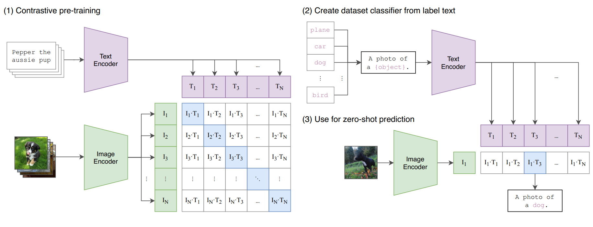
Figure 31: OpenAI 的 CLIP 模型. (1) 需要注意 \(I_1\) 是一张图片编码出来的向量, 每次会同时送进 \(N\) 对图片和文本. (2)(3) 表示 CLIP 如何用于图片分类任务, softmax 后 \(I_1\cdot T_3\) 对应的概率最大, 说明 \(T_3\) 对应的文本最能描述图片.
- 然后就是设计 loss 的时候了: 论文里先对 Figure fig-clip 的方格按行 softmax (看作固定 image 对应各种文本的条件概率), 然后对角线的概率 (的 \(\log\) 值) 加起来取负号得到 \(L_1\). 当然也可以按列 softmax (看作固定文本对应各种图片的条件概率), 然后也是对角线的概率 (的 \(\log\) 值) 加起来取负号得到 \(L_2\). 最后典中典 ad hoc 地把他们加起来 (或取平均) 得到最终的 loss: \(L = L_1+L_2\).
CLIP 训练出来的结果就是文本和图片可以对应到同一个 latent space 里面了 (模态对齐)!
- 为什么早期 OpenAI 的模型数不清楚手指? 是因为本质上 CLIP 理解图片还是先把图片映射到文字再进行理解的 (很多人这么说, 我先存疑 anyway).
BERT
其实就是 CBOW, skip-gram 和 word2vec 的动态版本.
- 目标不是生成文本而是将每个词在上下文中的语义表示出来 (Word Embedding).
- 用的结构其实就是 All you need 文章架构的左边 encoder 部分.
- CBOW, skip-gram, word2vec 也都是为了这个目标而设计的, 但是他们的上下文可以视为无穷大, 每个词的 embedding 也是不会变化的 (理解为「全局语义」). 但是同一个词在不同的有限上下文中经过 BERT 处理后得到的 embedding 是不一样的 (因为 context 不一样, 理解为「局部语义」).